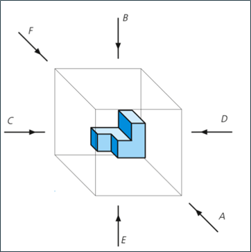

b) Vistas principales
Una pieza se puede proyectar sobre las seis caras de un poliedro (paralelepipedo) formado por tres planos de proyección y otros tres paralelos a ellos. Estas proyecciones se denominan de la siguiente manera (ver figura 2).
A: Vista de frente o proyección vertical. Alzado.
B: Vista superior o proyección horizontal. Planta.
C: Vista lateral izquierda. Lateral o perfil izquierdo.
D: Vista lateral derecha. Lateral o perfil derecho.
E: Vista inferior. Planta inferior.
F: Vista posterior. Alzado posterior.

Fig. 2. Vistas principales. Fuente: (Arrate et al, 2019).